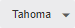
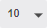
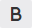
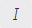
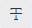
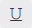
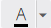
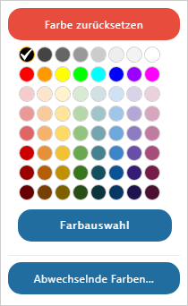
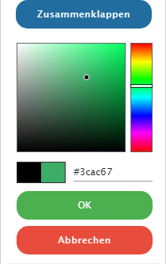
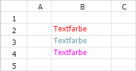

Über die folgenden Formatierungsbuttons kann das Format des Zelleninhalts individuell angepasst werden.
Buttons "Textformat"
Ø

SchriftartMit Hilfe dieses Auswahlbuttons kann die Schriftart definiert werden. Folgende Schriften stehen zur Verfügung:
ü Tahoma
ü Times New Roman
ü Arial
ü Verdana
ü Calibri
Ø

SchriftgrößeAn dieser Stelle kann die Schriftgröße gewählt werden.
Ø

FettDurch Auswahl dieser Formatierung wird der Inhalt der Zelle fett dargestellt.
Ø

KursivDurch Auswahl dieser Formatierung wird der Inhalt der Zelle kursiv dargestellt.
Ø

DurchgestrichenDurch Auswahl dieser Formatierung wird der Inhalt der Zelle durchgestrichen dargestellt.
Ø

UnterstreichenDurch Auswahl dieser Formatierung wird der Inhalt der Zelle unterstrichen dargestellt.
Ø

TextfarbeMit Hilfe dieses Buttons kann der Inhalt von Zellen mit einer Farbe versehen werden. Wird der linke Bereich des Buttons angewählt, so wird die zuletzt gewählte Farbe direkt auf die Zelle bzw. den markierten Bereich angewendet. Wird hingegen der rechte Bereich gewählt, so öffnet sich ein Dialog, in welchem eine Farbe gewählt oder ein Farbwechsel definiert werden kann.
ü Farbauswahl

Beispiel

ü Abwechselnde Farben
Durch
Anwahl des Buttons "Abwechselnde Farben" können Zellen mit einem automatischen
Farbwechsel versehen werden (weitere Information entnehme Sie bitte dem Kapitel
Abwechselnde Farben).
Beispiel
